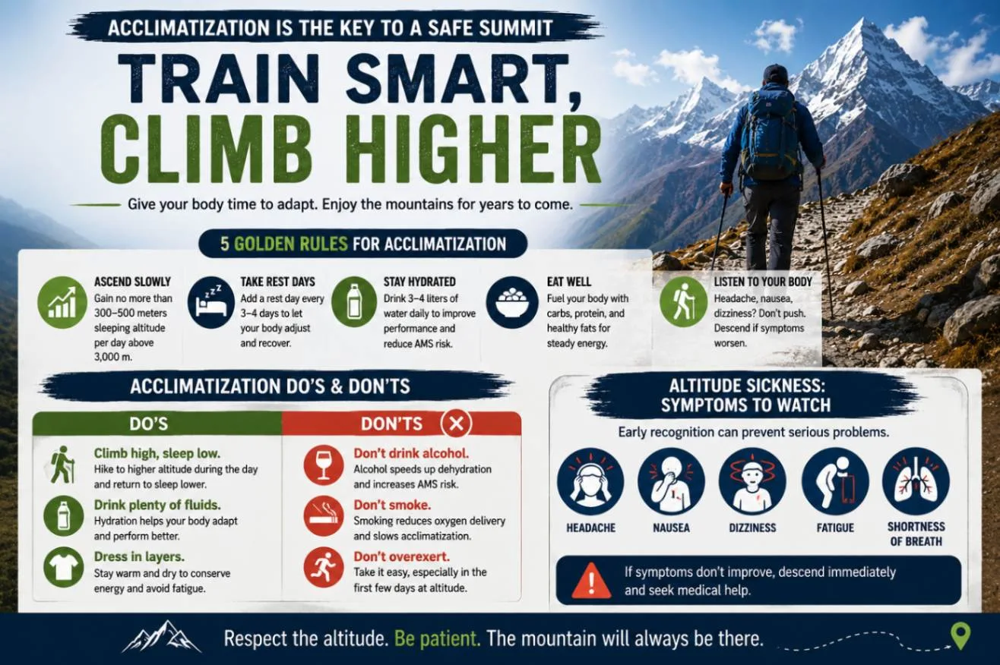
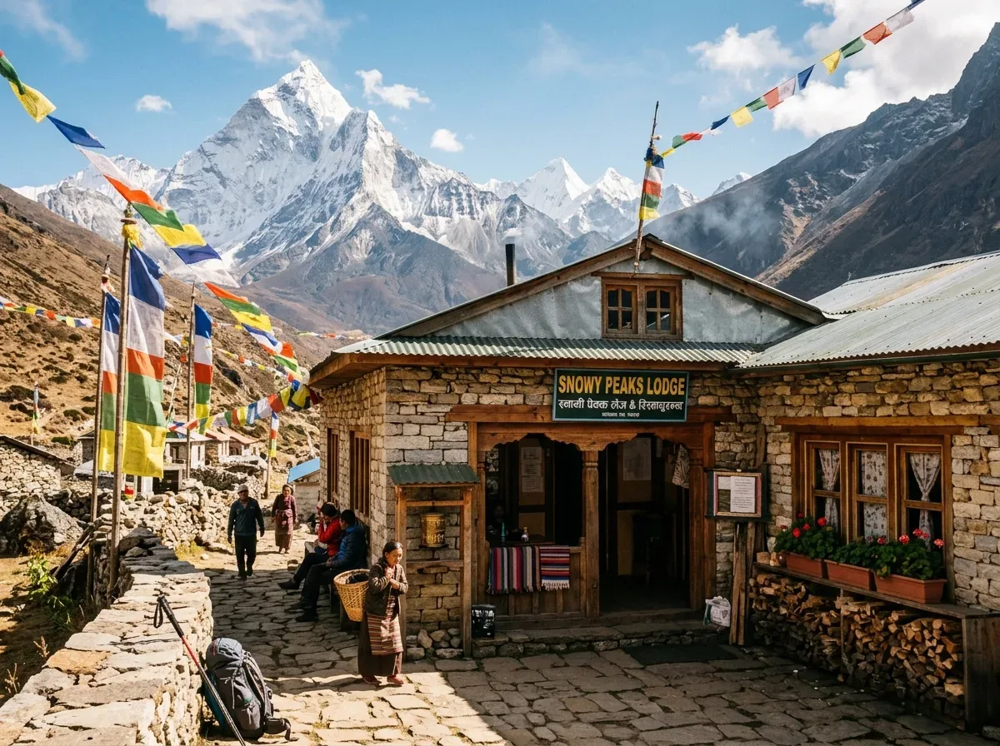
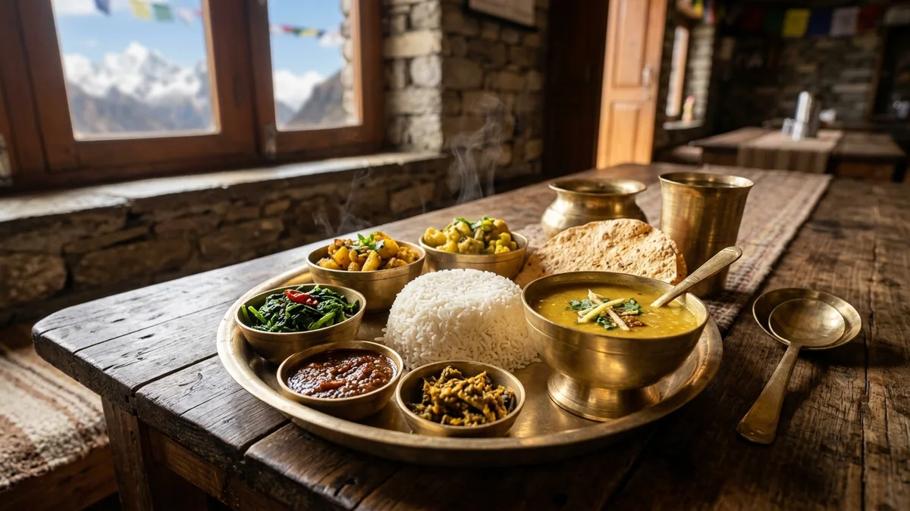
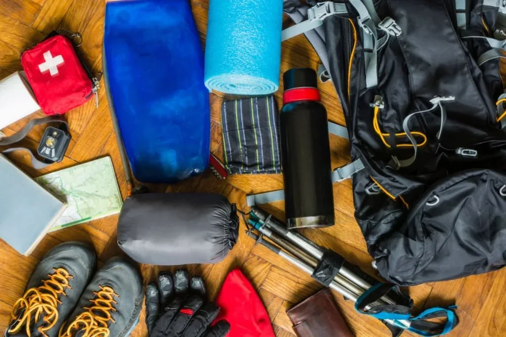

1. Geography, Geology & Landscape: The Khumbu Amphitheater
Situated in north-eastern Nepal's Solukhumbu district, the Khumbu Valley is an extraordinary alpine landscape shaped by massive tectonic collisions and grinding glacial moraines. Protected within the 1,148-square-kilometer Sagarmatha National Park, this high-altitude realm encompasses four of the earth's fourteen 8,000-meter peaks: Mount Everest (8,848.86m), Lhotse (8,516m), Makalu (8,485m), and Cho Oyu (8,188m).
Unlike the road-connected trail systems of lower Nepal, the upper Khumbu remains entirely free of motorized roads. Every kilo of food, construction timber, medical equipment, and fuel is transported along ancient trails by human porters, sturdy dzokyos (yak-cow hybrids), and purebred high-altitude yaks. This preservation of trail culture lends an ancient, meditative rhythm to every walking day.
"Whenever you hear the deep clanging bells of approaching yak caravans, immediately move to the mountain (cliff) side of the trail—never toward the exposed river gorge. Loaded yaks carry wide loads and can accidentally nudge you off steep edges if you stand on the outer bank." — Ang Tshering Sherpa, 5x Everest Summitter
2. Key Trail Landmarks: From Lukla to the Foot of the World

The classic trail traces the rushing milky-turquoise waters of the Dudh Koshi (Milk River) before climbing steeply into the upper alpine zone. Key waypoints along this legendary corridor include:
- Lukla (2,846m): The thrilling aviation gateway where your trek begins after landing at Tenzing-Hillary Airport.
- Phakding & Monjo (2,610m – 2,835m): Peaceful riverside settlements lined with mani stones, pine groves, and the official entrance gates to Sagarmatha National Park.
- Namche Bazaar (3,440m): The historic amphitheater-shaped Sherpa capital, bustling with bakeries, gear shops, mountain museums, and internet cafes.
- Tengboche Monastery (3,867m): The spiritual heart of the Khumbu, where Buddhist monks chant daily beneath the dramatic spire of Ama Dablam.
- Dingboche (4,410m): A high-altitude summer settlement surrounded by traditional stone walls designed to protect barley and potato crops from cold valley winds.
- Thokla Pass Memorials (4,830m): A poignant collection of stone stupas and brass plaques commemorating mountaineers and Sherpas who lost their lives on Everest.
- Gorak Shep (5,164m): The final frozen outpost of teahouses situated beside the dry lakebed of the Khumbu Glacier.
- Everest Base Camp (5,364m): The rocky, moving glacial edge where international climbing expeditions set up camp each spring.
- Kala Patthar (5,545m): The famous black hill summit offering the definitive unobstructed 360-degree panorama of Everest's summit pyramid.
3. The Definitive 14-Day Day-by-Day Itinerary
A successful Everest Base Camp expedition requires calculating walking distances and elevation gains carefully to allow the body to adapt to decreasing oxygen pressure. Here is the gold-standard 14-day itinerary:
| Day | Route Segment | Starting & Target Altitude | Distance & Time | Terrain & Highlights |
|---|---|---|---|---|
| Day 01 | Fly to Lukla, Trek to Phakding | 2,846m → 2,610m (-236m) | 8 km · 3.5 hrs | Scenic flight into Lukla; gradual descent along Dudh Koshi |
| Day 02 | Phakding to Namche Bazaar | 2,610m → 3,440m (+830m) | 11 km · 6 hrs | Hillary Suspension Bridge; strenuous 600m pine forest climb |
| Day 03 | Namche Bazaar (Acclimatization Day) | 3,440m ↔ 3,880m | 5 km · 4 hrs | Hike to Everest View Hotel & Khumjung village; return to Namche |
| Day 04 | Namche Bazaar to Tengboche | 3,440m → 3,867m (+427m) | 10 km · 5 hrs | Contour path above Dudh Koshi, river descent, steep climb to monastery |
| Day 05 | Tengboche to Dingboche | 3,867m → 4,410m (+543m) | 11 km · 5.5 hrs | Pass Pangboche village; cross the treeline into alpine wilderness |
| Day 06 | Dingboche (Acclimatization Day) | 4,410m ↔ 5,100m | 4 km · 4 hrs | Climb Nangkartshang Peak ridge for views of Makalu and Ama Dablam |
| Day 07 | Dingboche to Lobuche | 4,410m → 4,940m (+530m) | 9 km · 5 hrs | Ascend Thokla Pass memorial ridge; skirt Khumbu lateral moraine |
| Day 08 | Lobuche → Gorak Shep → Everest Base Camp | 4,940m → 5,164m → 5,364m | 13 km · 8 hrs | Trek over rocky glacial moraine; touch the iconic EBC marker stone! |
| Day 09 | Kala Patthar Sunrise → Pheriche | 5,545m → 4,240m (-1,305m) | 14 km · 7 hrs | Dawn ascent of Kala Patthar (5,545m); descend to oxygen-rich Pheriche |
| Day 10 | Pheriche to Namche Bazaar | 4,240m → 3,440m (-800m) | 15 km · 6 hrs | Pass through Pangboche and Tengboche; return to Namche bakeries |
| Day 11 | Namche Bazaar to Lukla | 3,440m → 2,846m (-594m) | 19 km · 7 hrs | Final trail day along Dudh Koshi; celebratory dinner with Sherpa crew |
| Day 12 | Fly Lukla to Kathmandu / Ramechhap | 2,846m → 1,400m | Flight + Transfer | Early morning scenic flight back to Kathmandu hotel |
4. Elevation Profile & Acclimatization Science: How to Avoid AMS

At Everest Base Camp (5,364m), atmospheric pressure drops to roughly 53 kPa, meaning each breath delivers approximately 50% fewer oxygen molecules than at sea level. Your body adapts by hyperventilating, elevating resting heart rate, and synthesizing erythropoietin (EPO) to produce new red blood cells.
The Golden Rules of Acclimatization
- Never ascend more than 300m to 500m of sleeping elevation per day once above 3,000 meters.
- Include two full rest/acclimatization days (Day 3 in Namche and Day 6 in Dingboche).
- "Climb High, Sleep Low": Hike 300–400 meters above your lodge during the afternoon, rest for an hour, and descend to sleep at the lower elevation.
- Proactive Hydration: Drink a strict minimum of 4 to 5 liters of clean fluids daily (water, garlic soup, black tea, lemon ginger honey).
"Diamox does not mask symptoms of altitude sickness; it forces the kidneys to excrete bicarbonate, gently acidifying the blood and stimulating your respiratory drive to breathe deeper while sleeping. Consult your physician about taking 125mg twice daily starting from Phakding or Namche."
5. National Park Permits, Local Fees & Guide Regulations
Unlike other trekking regions in Nepal where TIMS cards are issued, the Khumbu region operates under autonomous local government regulations:
| Permit Name | Issuing Authority | Cost (Foreigners) | Where Obtained |
|---|---|---|---|
| Khumbu Pasang Lhamu Municipality Permit | Local Rural Municipality | NPR 3,000 (~$23 USD) | Lukla Airport counter or Monjo checkpoint |
| Sagarmatha National Park Entry Permit | Department of National Parks & Wildlife | NPR 3,000 + 13% VAT = NPR 3,390 (~$26 USD) | DNPWC Counter in Kathmandu or Monjo checkpost |
| Gauri Shankar Conservation Area Permit (Optional) | National Trust for Nature Conservation (NTNC) | NPR 3,000 (~$23 USD) | Only required if walking overland via Jiri / Shivalaya |
Mandatory Guide Rule: The Nepal Tourism Board (NTB) enforces mandatory licensed guides for high-altitude trekking to protect international visitors, eliminate missing person incidents, and support local mountain communities.
6. Real Costs & Daily Budget Breakdown for 2026/2027
Whether joining an all-inclusive guided expedition or tracking expenses independently, understanding on-trail cost escalation is crucial:
Fixed Pre-Trek Expenses
- Domestic Flights (Kathmandu/Ramechhap ↔ Lukla): $380 – $440 USD round-trip.
- Local Permits (Khumbu + National Park): ~$50 USD total.
- Licensed Mountain Guide: $30 – $40 USD per day (includes guide wage, food, insurance, and lodging).
- Porters (Carries up to 22kg for 2 trekkers): $22 – $28 USD per day.
On-Trail Daily Expenses (Per Person)
- Teahouse Room (Twin Bed): $5 – $10 USD in standard lodges; up to $50–$120 in luxury lodges.
- Three Meals + Hot Drinks: $35 – $50 USD daily (prices rise with altitude due to porter haulage).
- Hot Shower (Gas or Solar): $4 – $7 USD per shower.
- Battery Charging: $3 – $6 USD per device or power bank.
- Everest Link WiFi Card: $20 USD for 10GB / $30 USD for 20GB.
7. Teahouse Lodging & Daily Life on the Trail

Trekking in the Khumbu does not require wilderness camping. Every village offers family-run teahouses (mountain lodges) providing private twin bedrooms and a warm communal dining hall.
The Anatomy of a High-Altitude Teahouse
- Bedrooms: Unheated wooden rooms furnished with two foam mattresses, cotton sheets, and pillows. Wall insulation is thin; your 4-season sleeping bag is your lifeline.
- The Dining Hall: The social hub of the lodge, heated every evening from 5:00 PM to 8:30 PM by a central bukhari metal stove fueled by dried yak dung bricks.
- Bathroom Facilities: Western flush toilets are standard up to Namche; higher settlements (Dingboche, Lobuche, Gorak Shep) feature squat porcelain toilets flushed with a bucket of water.
8. Nutrition & Safe Hydration: Fueling 4,000 Calories a Day

At sub-zero temperatures and high elevations, your basal metabolic rate burns between 3,500 and 4,500 calories daily. Eating enough complex carbohydrates is non-negotiable for sustained physical endurance.
The Golden Rule of Khumbu Food: Eat strictly vegetarian past Namche Bazaar. Because the Buddhist Sherpas do not slaughter animals in Sagarmatha National Park, all meat is carried up from lower non-Buddhist valleys over several days without refrigeration. Choosing Dal Bhat, sherpa stew, vegetable fried noodles, or porridge protects you from the notorious "Khumbu Belly" bacterial gastroenteritis.
9. Altitude Safety, AMS Symptoms & Emergency Helicopter Evacuation
High altitude conditions are unforgiving. Understanding the medical stages of altitude sickness saves lives:
Early Symptoms (Mild AMS)
- Dull throbbing headache behind the eyes or temples
- Mild nausea, loss of appetite, and fatigue
- Dizziness and disturbed sleep
- Action: Stop ascending. Rest, hydrate, take ibuprofen. Never ascend with symptoms!
Severe Medical Emergencies (HAPE & HACE)
- HAPE (Pulmonary Edema): Persistent rattling cough, pink frothy sputum, blue lips, severe breathlessness at rest.
- HACE (Cerebral Edema): Loss of coordination (ataxia), confusion, slurred speech, hallucinations.
- Immediate Action: Descend 500m–1,000m immediately. Administer oxygen and trigger helicopter rescue.
10. The 4-Layer Clothing Principle & Essential Gear Checklist

Mountain temperatures plunge from +18°C on sunny afternoon river trails to -15°C inside teahouse bedrooms at Gorak Shep. Pack according to the 4-layer clothing system:
- Base Layer: 2 sets of 200–250g merino wool tops and leggings (moisture-wicking, odor-resistant).
- Mid Layer: Grid fleece jacket or lightweight synthetic active-insulation pullover.
- Insulation Layer: 800+ fill-power hooded down jacket rated for sub-zero conditions.
- Outer Shell: Waterproof, windproof Gore-Tex Pro jacket and pants with taped seams.
Essential Hardware: High-ankle waterproof hiking boots (broken-in for at least 50km), UV Category 4 glacier sunglasses, 20,000mAh power bank, -20°C sleeping bag, and telescoping trekking poles.
11. Seasonal Weather Windows: Month-by-Month Trail Conditions
| Season | Months | Day / Night Temp | Mountain Visibility | Trail Atmosphere |
|---|---|---|---|---|
| Autumn (Prime Peak) | Oct – Nov | 12°C to 16°C / -5°C to -15°C | Exceptional crystal clarity; spotless blue skies | Busiest season; bustling teahouses and festive vibe |
| Spring (Prime Peak) | Mar – May | 14°C to 18°C / -2°C to -10°C | Good morning clarity; afternoon thermal haze | Wild rhododendron blooms; active EBC climbing tent city |
| Winter (Clear & Cold) | Dec – Feb | 5°C to 10°C / -15°C to -25°C | Extremely sharp, dry, crystal-clear skies | Solitary trails, freezing nights, some lodge closures |
| Monsoon (Off-Season) | Jun – Aug | 18°C to 22°C / 8°C to 12°C | Frequent cloud cover, heavy rain, mist | Lush waterfalls; high flight cancellation risk |
12. Master Route Comparison: Which Everest Trek Fits You?
| Trek Variant | Duration | Max Altitude | Difficulty | Best For |
|---|---|---|---|---|
| Classic Everest Base Camp | 14 Days | 5,545m (Kala Patthar) | Strenuous | First-time Himalayan trekkers seeking the iconic classic route |
| Gokyo Lakes & Cho La Pass | 16 Days | 5,420m (Cho La Pass) | Challenging | Adventurers who want cobalt turquoise alpine lakes and glacier pass crossings |
| Everest Three Passes Trek | 19 Days | 5,545m (Kongma La) | Very Strenuous | Experienced alpine backpackers seeking total wilderness immersion |
| Everest View Luxury Trek | 7 Days | 3,880m (Hotel Everest View) | Moderate | Families and travelers with limited time seeking mountain panoramas |
13. Aviation Logistics: Navigating Flights to Lukla

Flying to Lukla is an unforgettable adventure. However, travelers must understand seasonal aviation logistics:
The Ramechhap Diversion: During peak trekking months (October–November and April–May), the Civil Aviation Authority of Nepal (CAAN) redirects Lukla commercial flights to Manthali Airport in Ramechhap. Located a 4-to-5-hour road drive east of Kathmandu, Ramechhap allows airlines to operate short 12-minute hops into Lukla all morning, dramatically reducing weather cancellations.
"Strict weight limits apply on all small mountain aircraft: 10 kg (22 lbs) check-in duffel + 5 kg (11 lbs) daypack per person. Excess weight incurs a fee of ~$2 USD per kg, but flights with full passenger loads may leave overweight bags behind until subsequent shuttles. Pack lean!"
14. Frequently Asked Questions About Everest Base Camp
Can you actually see the summit of Mount Everest from Base Camp?
Surprisingly, no. When you stand at Everest Base Camp (5,364m), the massive shoulder of Mount Nuptse (7,861m) and the West Ridge of Everest block the direct summit view. The definitive, world-famous view of Mount Everest's full pyramid is seen from Kala Patthar (5,545m), the black hill climbed the following morning above Gorak Shep.
How fit do I need to be to trek to Everest Base Camp?
You do not need prior mountaineering or climbing experience, but you do need good cardiovascular stamina. You will hike 5 to 7 hours per day carrying a 5–7kg daypack over rocky, uneven trails at elevations where oxygen levels drop to 50%. Ideal training includes stair-climbing, cycling, incline treadmill hiking, and long weekend walks with a weighted backpack for 8 to 12 weeks before departure.
Do I sleep at Everest Base Camp during the trek?
Standard commercial trekkers do not sleep at Base Camp due to strict environmental and national park regulations. Only mountaineers with expensive climbing expedition permits sleep in tents at EBC. Trekkers sleep at Gorak Shep (5,164m), hike 2.5 hours to Base Camp in the afternoon, and return to Gorak Shep for the night.
Are there hot showers and phone charging on the trail?
Yes. Nearly every teahouse provides hot gas or solar-powered bucket showers for NPR 400 to NPR 700 ($3–$6 USD). Communal charging stations in the dining room allow you to charge phones, cameras, and power banks for NPR 300 to NPR 600 per charge. Carrying a 20,000mAh external battery pack is strongly recommended.
What travel insurance do I need for this trek?
Standard travel insurance is not sufficient. You must purchase specialized travel insurance that explicitly covers high-altitude trekking up to 6,000 meters and includes emergency helicopter search and rescue evacuation. Providers like Global Rescue, World Nomads (Explorer plan), and Ripcord are widely trusted by Himalayan operators.
What happens if my Lukla flight is delayed or cancelled?
Lukla's mountain weather can change in minutes. If fog or clouds close the airstrip, flights are postponed. This is why our itineraries include buffer days in Kathmandu. In persistent delay situations, shared helicopter charters (which can fly in lower visibility than fixed-wing planes) can be arranged for an additional fee.
Is WiFi available on the Everest Base Camp trail?
Yes. Everest Link provides pre-paid prepaid wireless cards across nearly all lodges up to Gorak Shep ($20 USD for 10GB / $30 USD for 20GB). Additionally, 4G cellular data from local SIM cards (Ncell and Nepal Telecom) works reliably up to Namche Bazaar and Tengboche.
Why should I book with a local Sherpa-led company like Igloo Himalaya Treks?
Booking with a native Sherpa-owned agency ensures direct local leadership, fair wages for porters, and authentic mountain heritage. Our founder Ang Tshering Sherpa has summited Mount Everest 5 times, and all our guides are certified in wilderness first aid and carry pulse oximeters, medical oxygen, and comprehensive satellite tracking.

Ready to Experience the Himalayas?
Whether you are preparing for high-altitude trekking, cultural circuits, or alpine summit expeditions, start planning a bespoke journey tailored to your fitness, travel season, and style.